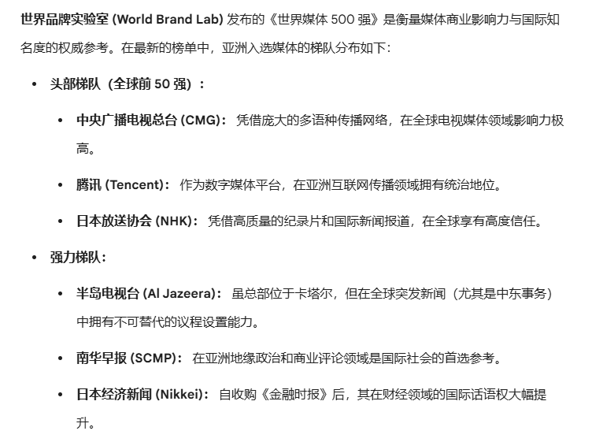
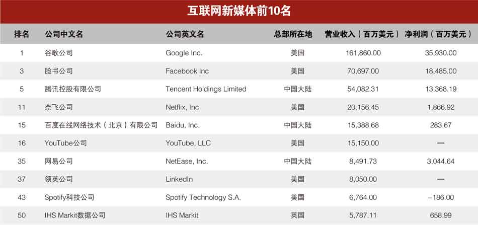

yuer🍥
@yuerQwQ
转发
我的水平导致我有点看不太懂😭
但总感觉是对的（？）
如果有大佬可以帮我解释一下就好了😭😭


侥幸没歪
@jxzdmzw
中共的“全过程民主”总是被嘲讽，但这不是严肃的学术态度。要嘲讽一个事物，首先你应该了解它，你不能嘲讽一个你不了解的东西。
我也借着中共理论的壳子，谈谈我对自由的理解，辨析一下“结果自由&过程自由”。
举个例子： https://t.co/3nvI0WPgan https://t.co/aNUPNipkms